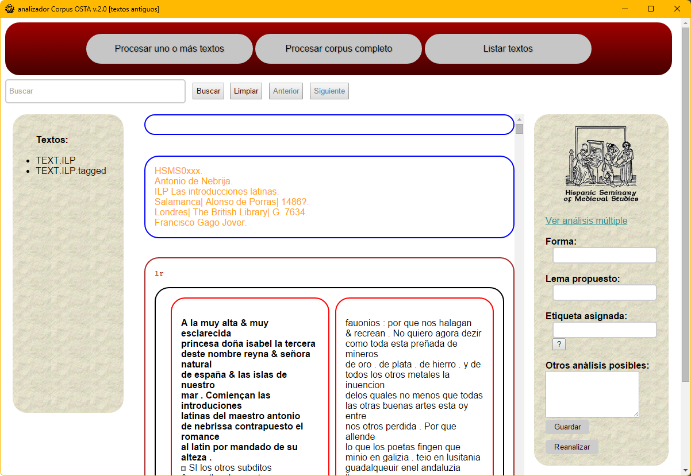

Manual
Analizador Corpus OSTA (1.0)
(última actualización 2026-03-06)
Francisco Gago Jover

Hispanic Seminary
of Medieval Studies
Manual Analizador Corpus OSTA ©
2026
is licensed under CC
BY-NC-SA 4.0